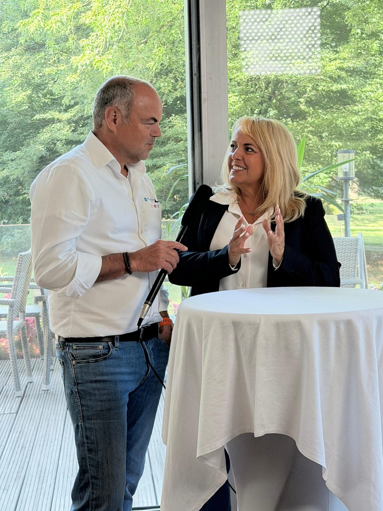

Grundlagen
Was ist Videocoaching genau?
Videocoaching ist ein persönliches Training, bei dem du lernst, dich vor der Kamera authentisch und sicher zu zeigen – ohne Schauspielerei, ohne auswendig gelernten Text. Es geht um Haltung, Stimme, Struktur und Mindset, nicht nur um Technik.
Tipp 1Videocoaching ersetzt keine Videoproduktion – es macht dich unabhängig davon, damit du jederzeit selbst drehen kannst.